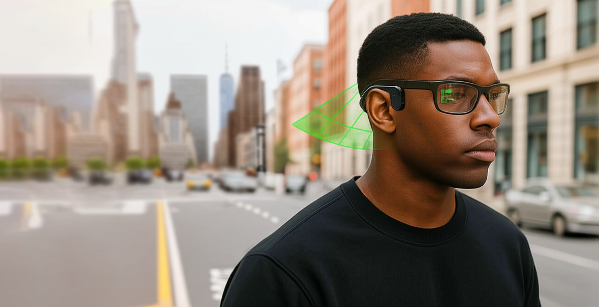
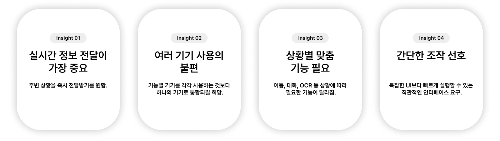
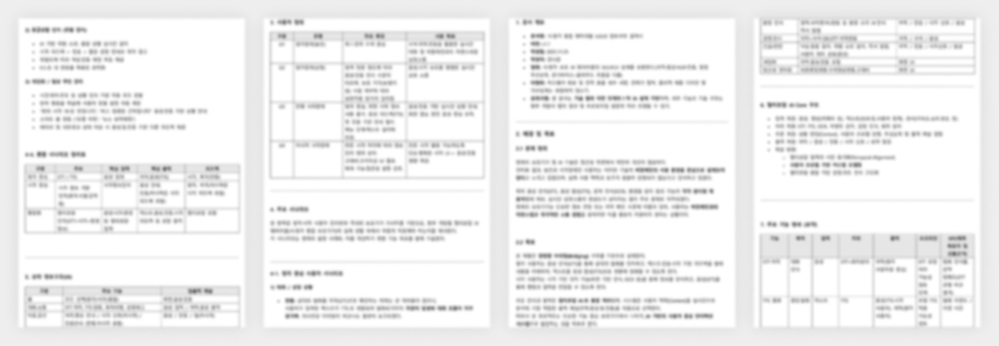
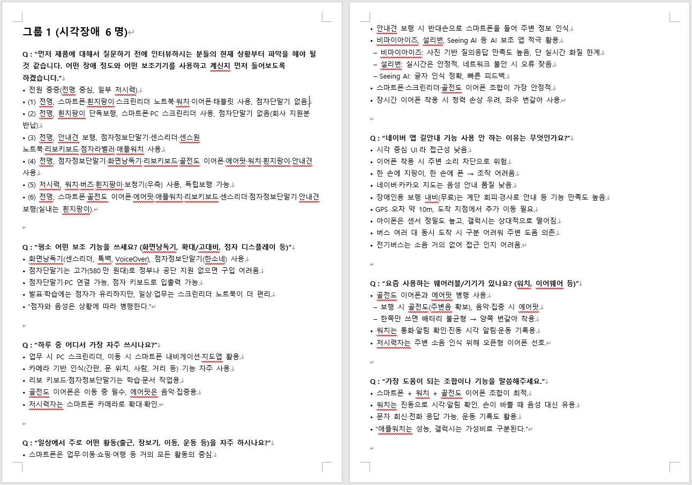
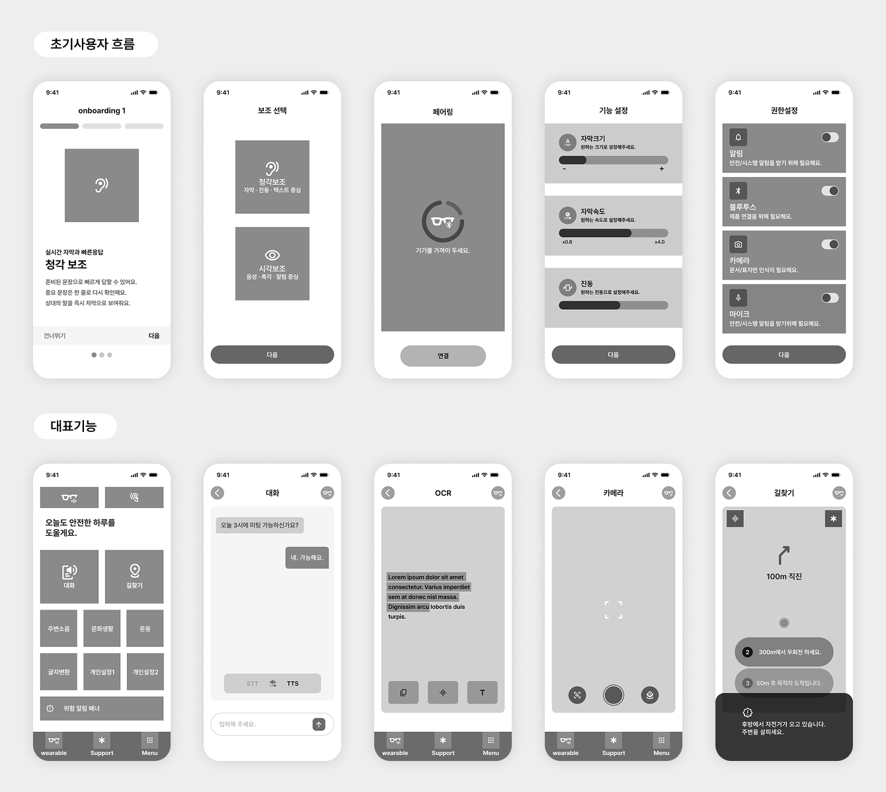

AI Smart
Glasses
시각/청각 보조를 위한 초개인화 주변상황 안내 웨어러블 디바이스 UX/UI
Figma
PowerPoint
UX Planning
Information Architecture
Wireframe
Documentation

시각·청각장애인의 정보 접근성과 의사소통을 지원하는 AI 기반 웨어러블 서비스
본 프로젝트는 AI 기반 웨어러블 디바이스와 모바일 애플리케이션을 연동하여 시각·청각장애인의 정보 접근성과 의사소통을 지원하는 정부 연구개발 프로젝트입니다. 1차년도에서는 서비스 구조를 정의하고 사용자 경험의 기반이 되는 정보구조와 주요 기능을 설계했으며, 이후 UX/UI 고도화를 위한 기반을 구축했습니다.
프로젝트 목표
- 시각·청각장애인을 위한 보조 서비스 설계
- 웨어러블과 모바일 앱의 서비스 구조 정의
- 핵심 기능 및 사용자 플로우 설계
- Information Architecture 구축
- Wireframe 설계
UX/UI Design
- UX Research
사용자 인터뷰 질문지 설계
사용자 요구사항 분석
UX 인사이트 도출 - UX Planning
서비스 구조 설계
기능 정의
Information Architecture - UX/UI Design
User Flow
Wireframe
Screen Definition - Documentation
정부과제 산출물 작성
정보구조 설계 문서 작성
기능정의서 작성
왜 이 프로젝트가 필요했는가
시각·청각장애인은 주변 환경을 인지하고 타인과 의사소통하는 과정에서 다양한 제약을 경험합니다. 기존 보조기기는 특정 기능에 한정되어 있거나 여러 기기를 함께 사용해야 하는 불편함이 있었으며, 실시간 정보 전달과 접근성 측면에서도 개선이 필요했습니다.

Accessibility
시각·청각장애인을 위한 통합 보조 서비스 부족
Real-time
주변 상황을 실시간으로 전달하기 어려움
Communication
대화와 의사소통 과정의 제약
Mobility
길찾기와 주변 위험 상황 인지의 어려움
AI Wearable Device
AI 기반 스마트 글래스와 모바일 애플리케이션을 연동하여 시각·청각장애인의 일상 의사소통과 주변 상황 인지를 지원하는 웨어러블 디바이스입니다.
Representative Cases
접근성과 웨어러블 서비스 UX를 분석하기 위해 국내외 보조기기 및 AI 서비스 사례를 조사했습니다. 국내외 접근성 서비스의 UI 구성과 사용자 흐름을 분석하여 프로젝트에 적용 가능한 UX 패턴을 도출했습니다.

Nuance Audio
스마트 보청기
환경별 프리셋
자동 프리셋 추천
Samsung Good Vibes
촉각 의사소통
화면 최소화
진동 패턴 지원
Be My Eyes
AI 시각 지원
단순한 홈 화면
긴급 도움 기능
Google Lookout
OCR · 사물 인식
카메라 중심 UI
자동 촬영
Seeing AI
AI 시각 보조
모드 기반 UX
자동 모드 추천
Sullivan Plus
AI OCR
음성 중심 UX
연속 읽기
User Research Insights
사용자 인터뷰를 통해 도출한 주요 인사이트를 기반으로 서비스 구조와 사용자 흐름을 설계했습니다.

서비스 구조 설계
사용자 요구사항을 바탕으로 서비스 구조와 화면 계층을 정의하고 Information Architecture를 설계했습니다.

Screen Definition
Information Architecture를 기반으로 각 화면의 역할과 기능을 정의하여 화면 간 관계와 사용자 흐름을 명확하게 설계했습니다.


Low-Fidelity Wireframe
Information Architecture를 기반으로 주요 기능의 화면 구성과 사용자 흐름을 저충실도 와이어프레임으로 구체화했습니다.
